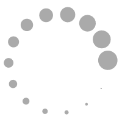

<!DOCTYPE html>
<html>
<head lang="en">
    <meta charset="UTF-8">
    <title>gesture</title>
    <meta name="viewport" content="width=device-width, initial-scale=1.0">
    <style>
    body{
      width: 100%;
      height: 100%;
      margin: 0;
      position: absolute;

    }
    #content{
      /*width: 100vw;*/
      height:100%;
      position: relative;
          /*text-align:center;*/
        display: flex;
        align-items: center;
        justify-content: center;
        overflow:scroll;
        /*background: blue;*/
    }
    #browser{
      width: 100%;
      height: 100%;
      background: black;
    }
  #bin{
     /*display:block;*/
     /*margin:0 auto;*/
      /*position: relative;*/
        /*margin:auto auto;*/
        /*width:80%;*/
        /*position: fixed;
        top:40%;
        right:30%;*/
        margin: 0;
        padding: 0;
        border:0;
        /*animation: scale 3s;
        animation-delay:2s;
        animation-fill-mode:forwards;*/
        /*margin-left: -300px;*/
    }
    .img1{
      /*margin-left: 0px;*/
      /*margin-top: 15px;*/
      position: fixed;
      top: 30px;
      left: 10px;
      width:50px;
      height:50px;
      z-index: 9999;
      /*float: left;*/

    }
    .img2{
      position: absolute;
      right:13px;
      top: 25px;
      width: 35px;
      height: 35px;
      font-weight: bold;
    }
    .img2:active{
      opacity: 0.8;
    }
    /*@keyframes scale{
      0% {
      transform: scale(1);
      }
      50% {
      transform: scale(.50);
      }
      100% {
      transform: scale(.5);
      }
    }*/
    .loading{
      position: fixed;
      top: 50%;
      left: 50%;
      height: 100%;
      width: 100%;
      background: black;
      z-index: 999;
      display: block;
    }
    header{
      position: fixed;
      top: 0;
      left: 0;
      width: 100vw;
      height: 18.7vw;
      background: white;
      z-index: 99999;
      box-shadow: 0px 0px 2px .9px #000;
    }
    </style>
</head>

<body>
  <div id="browser">
    <!-- <div class="loading"></div> -->
    <!-- <header> -->
      </img>
      <!-- </img>
    </header> -->

    <div id="content" >

    </img>
  </div>

  </div>
  </body>
  </html>
    <script type="text/javascript" src="../../script/api.js"></script>
    <script type="text/javascript" src="../../json/api.json"></script>
    <script type="text/javascript" src="../../script/jquery-3.1.0.min.js"></script>
     <script src="../../script/vue.js" type="text/javascript" charset="utf-8"></script>
    <script>
    var toggle11 = true;
    apiready=function(){
      $api.addEvt($api.dom('#content'), 'click', function(){
        api.closeWin({
            name: 'im'
        });
      });
      api.addEventListener({
          name:'swipedown'
      }, function(ret, err){
        api.closeWin({
            name: 'im'
        });
      });
    // alert(api.winWidth+"高："+api.winHeight);
    api.addEventListener({
    name:'swiperight'
}, function(ret, err){
    api.closeWin({
        name: 'im'
    });

});
      console.log(api.pageParam.isrc);
      var imgs=new Image();

       var minWidth,minHeight,apiw,apih;
      setTimeout(function(){
                    imgs.src=ib.isrc;
                    imgs.onload=function(){
                      apiw=api.winWidth;
                      apih=api.winHeight;
                      iw=imgs.width;
                      ih=imgs.height;
                      if(iw>=apiw){
                        minWidth=apiw;
                        ih=(apiw/iw)*ih;
                      }else{
                        minWidth=iw;
                      }
                      ib.w=minWidth;
                      console.log(ib.w,minWidth);
                       $("#bin").css("width",minWidth+"px");
                      //  $("#bin").css("height",img.height+"px");
                      if(iw==0){
                         $("#bin").css("width","90%");
                      }
                    }
            },50)


      var flag = false,change = false;
      var val = null;
      var ib= new Vue({
           el:'#browser',
           data:{
             isrc:api.pageParam.isrc,
             w:0,
             h:0
           },
           methods:{
             //图片双击变大，再双击变小
             twoclick:function(){
                if(false == flag){
                  flag = true;
                 setTimeout(function(){
                     flag = false;
                 },500);
               }else{
                 if(change==false){
                  //  alert( $("#bin").css("width"));

                 $("#bin").css({"width":apiw*1.5+"px","margin":"0"});
                 change=true;
               }else{

                  $("#bin").css({"width":apiw*0.8+"px","margin":"0"});
                  change=false;
               }
               }
             },
             //图片下载并保存到系统相册中
             download:function(){
            api.download({
            url: api.pageParam.isrc
            // report: true,
            // cache: true,
            // allowResume: true
                },function(ret, err){
                    if(ret.state == 1){
                      api.saveMediaToAlbum({
                                          path: ret['savePath']
                                      }, function(ret, err){
                                          if (ret.status) {

                                                       api.toast({
                                  msg: "图片保存成功",
                                  duration:2000,
                                  location: 'middle'
                                                 });

                                          } else{

                                              api.toast({
                                  msg: "图片保存失败",
                                  duration:2000,
                                  location: 'middle'
                                                 });

                                          }
                                      });
                    }else{
                        alert("图片下载失败，请重新下载");
                    }
                });


              },
              close:function(){
                    api.closeWin({
                        name: 'im'
                    });
             },
             dianji: function(event){
              //  alert(event.touches.length);
               if(toggle11){
                 clearTimeout(val);
                 console.log("单击了");
                 toggle11=false;
                 setTimeout(function(){
                     toggle11=true;
                 },200)
               }else{
                   console.log("双击了");
                   if(event.touches.length>1){
                     return;
                   }
                   if(ib.w>=apiw){
                       storage=1;
                       bin.style.transform = "scale(1)";
                       ib.w = minWidth;
                       ib.h = ih;
                       bin.style.marginLeft = bin.style.marginRight;
                       bin.style.marginTop = bin.style.marginBottom;
                      //  console.log(apiw+'::::'+ib.w);
                   }else{
                      storage = apiw/minWidth;
                      bin.style.transform = "scale("+storage+")";
                      ib.w = apiw;
                      ib.h = ih*storage;
                      bin.style.marginLeft = bin.style.marginRight;
                      bin.style.marginTop = bin.style.marginBottom;
                      //  console.log(ib.h);
                   }
               }
             },
             tclick: function(n){
                   clearTimeout(val);
                   if(n==1){
                       val = setTimeout(function(){
                      api.closeWin({
                          name: 'im'
                      });
                 },200)
               }else if(n==2){
                 console.log("??????????");
                   clearTimeout(val);
                   if(ib.w>=apiw){
                       storage=1;
                       bin.style.transform = "scale(1)";
                       ib.w = minWidth;
                       ib.h = ih;
                       bin.style.marginLeft = bin.style.marginRight;
                       bin.style.marginTop = bin.style.marginBottom;
                      //  console.log(apiw+'::::'+ib.w);
                   }else{
                      storage = apiw/minWidth;
                      bin.style.transform = "scale("+storage+")";
                      ib.w = apiw;
                      ib.h = ih*storage;
                      bin.style.marginLeft = bin.style.marginRight;
                      bin.style.marginTop = bin.style.marginBottom;
                      //  console.log(ib.h);
                   }
                  //  console.log(ib.w+'::::'+apiw);
               }
             }
           }
       })

        //图片缩放
       var pageX, pageY, initX, initY, isTouch = false;
       var start = [];
       var now=[];
       var bin = document.getElementById('bin');
       var bin2 = document.getElementById('content');
       var scale;
       var bin3;
       var scale=0;
       var storage=0;
       // alert(bin);


       //
      //  bin2.addEventListener("touchstart" ,function (e) {
      //    if(e.touches.length==1){
      //      // alert("aa");
      //        e.target.style.paddingTop=e.touches[0].pageY+"px";
      //          e.target.style.paddingLeft=e.touches[0].pageX+"px";
      //    }
       //
      //   }, false);
    bin2.addEventListener("touchstart" ,function (e) {
    //  console.log("进来了");
     //手指按下时的手指所在的X，Y坐标
     if(e.touches.length==1){
       // alert("aa");
       bin3=e.touches;
        //  e.target.style.paddingTop=e.touches[0].pageY+"px";
        //    e.target.style.paddingLeft=e.touches[0].pageX+"px";
     }


    //  initX = e.targetTouches[1].pageX;
    //  initY = e.targetTouches[1].pageY;
    //  var x=Math.abs(initX-pageX);
    //  var y=Math.abs(initY-pageY);
    //  alert(x+";"+y);
     //初始位置的X，Y 坐标
    //  initX = e.target.offsetLeft;
    //  initY = e.target.offsetTop;
     // alert(pageX);
     //记录初始 一组数据 作为缩放使用
     if (e.touches.length >= 2) { //判断是否有两个点在屏幕上
     start = e.touches; //得到第一组两个点
     };
    //  console.log('aaaa');
     //表示手指已按下
     isTouch = true;
     }, false);
     //监听 touchmove 事件 手指 移动时 做的事情
     var suox = false;
     bin2.addEventListener("touchmove", function (e) {
        // bin3=e.touches;
      // console.log("喂喂喂");

    //  e.preventDefault();
    //  一根 手指 执行 目标元素移动 操作
    //  if (e.touches.length == 1 && isTouch) {
    //      // alert("1");
    //      //移动目标的 X Y 坐标
    //      var touchMoveX = e.targetTouches[0].pageX,
    //      touchMoveY = e.targetTouches[0].pageY;
    //      //设置当前点击元素的 top left 定位值
    //      e.target.style.left = parseInt(touchMoveX) - parseInt(pageX) + parseInt(initX) + "px";
    //      e.target.style.top = parseInt(touchMoveY) - parseInt(pageY) + parseInt(initY) + "px";
     //
    //  };

     // 2 根 手指执行 目标元素放大操作
     if (e.touches.length >= 2 && isTouch) {
        // console.log("？？？");
      //  alert("好啊吧");
     //得到第二组两个点
     now = e.touches;

    //  console.log(getDistance(now[0], now[1]) );
    //  console.log(getDistance(start[0], start[1]) );
     //得到缩放比例， getDistance 是勾股定理的一个方法
    //  console.log(now[0].pageY);
    var zhi=getDistance(now[0], now[1]) / getDistance(start[0], start[1]);
    // console.log(zhi);
    if(zhi>=1){
      // if(storage==0){
        scale = (zhi)+storage;
      // }else{
      //   scale = (zhi)+storage-0.2;
      // }
    }else{
      if(storage==0){
        scale = zhi;
      }else{
        scale=storage*zhi;
      }
      // console.log(w);
    }

    //  console.log(zhi);
     // 执行目标元素的缩放操作
     if(scale>0){
          //  console.log("你在说尼玛？");
          // scale = scale.toFixed(0);
          // iw = scale*iw;
          bin.style.transform = "scale(" + scale + ")";
            ib.w = minWidth*scale;
            ib.h = ih*scale;
            if(ib.w<minWidth){
              suox = true;
            }
            // console.log(ib.w);
            bin.style.marginLeft = bin.style.marginRight;
            bin.style.marginTop = bin.style.marginBottom;
     }

   }
   if(e.touches.length==1){
       var a=bin.style.marginTop;
         var b=bin.style.marginLeft;
           aa=parseInt(a.split("px")[0]);
           bb=parseInt(b.split("px")[0]);
           if(a==''){
             aa=0;
           }
           if(b==''){
             bb=0;
           }
        if(ib.w > apiw){
          console.log(ib.w+'>>>>'+apiw);
          var ww = ib.w-apiw;

            if(bb > ww.toFixed(0)){
              // bb = ww.toFixed(0);
              return;
            }
            if(bb < -ww.toFixed(0)){
              console.log(bb+':::'+ww.toFixed(0));
              bb = -ww.toFixed(0)
              // return;
            }
            // console.log(bb);
          bin.style.marginLeft=e.touches[0].pageX-bin3[0].pageX+bb+"px";
        }
        if(ib.h > apih){
          console.log('你妈的头');
          var hh = ib.h-apih;
          // console.log(aa+':::::::'+hh.toFixed(0));
          if(aa > hh.toFixed(0)){
            console.log(aa);
              // aa = hh.toFixed(0);
            // bin.style.marginTop = hh;
            return;
          }
          if(aa < -hh.toFixed(0)){
            aa = -hh.toFixed(0)
          }
          bin.style.marginTop=e.touches[0].pageY-bin3[0].pageY+aa+"px";
        }
        // console.log(bin.style.marginTop+'::::'+bin.style.marginLeft);
// console.log(e.touches[0].pageY-bin3[0].pageY+aa);


   bin3=e.touches;
   }
       }, false);
     //监听 手指离开屏幕时
     bin2.addEventListener("touchend", function (e) {
        if(suox == true){
          scale=1;
          bin.style.transform = "scale(1)";
          ib.w = minWidth;
        }
        suox=false;
      //  console.log("我也很绝望呀！我能怎么办？");
    storage=scale;
    //    if(getDistance(now[0], now[1])>getDistance(start[0],start[1])){
    //      storage=scale;
    //      if(getDistance(now[0], now[1])<getDistance(start[0],start[1])){
    //        scale=scale-storage;
    //      }
    //    }else if(getDistance(now[0], now[1])<getDistance(start[0],start[1])){
    //      storage=0;
    //    }
     //
    //  //将 isTouch 修改为false  表示 手指已经离开屏幕
    //  if (isTouch) {
    //   //  $(bin).css("animation-fill-mode","forwards");
    //   //  start=[];
    //   //  now=[];
    //    isTouch = false;
    //  }
     }, false);

     //缩放 勾股定理方法
     function getDistance(p1, p2) {
     var x = p2.pageX - p1.pageX,
     y = p2.pageY - p1.pageY;
     return Math.sqrt((x * x) + (y * y));
     //  alert(Math.sqrt((x*x)+(y*y)));
     };

    }


    </script>
